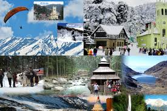

One of the most popular tourist places in Northern India is situated in Kullu District, Himachal Pradesh on the banks of Beas River and at an altitude of 1950 Meters or 6500 Feet (approximately) Manali, Valley of Gods. The term stands for Manu (Manu Rishi) + Aali (Home) and I bet you his home (Manali ;)) is just MAGICAL in nature.
Manali is one of the oldest towns in Kullu Valley. The place surrounds with the aura of ROMANCE everywhere, right from the hustle-bustle of mall road to the very calm, traditional, foreigners dominated old Manali to the woods/villages around/beyond Manu temple to the walking path around Hadimba temple. It can easily be called one of the ROMANTIC destinations of India.
he Hadimba goddess runs the Manali town and is the center of worship of the people living at Manali. The mighty goddess also governs the tall mountains along with raw nature, and it’s only after her permission that one gets to enjoy this beautiful place to the core. When people think of Manali, the second keyword that comes is, of course, Rohtang Pass which no doubt is a must-visit place if you go to Manali.
The best time to visit Manali is March to June when the heat is burning the low lands of Northern India. Then during the autumn season from the middle of September to late October is also a nice time to visit it. However, during the Dusherra festival, the Kullu region gets very crowded. If you are fond of snow or snowfall, then visit Manali from late December to March for enjoying the snow in Manali, Rohtang Pass, or Solang Valley. You may witness snowfall also in January and February, depending on the weather at the time of the visit.